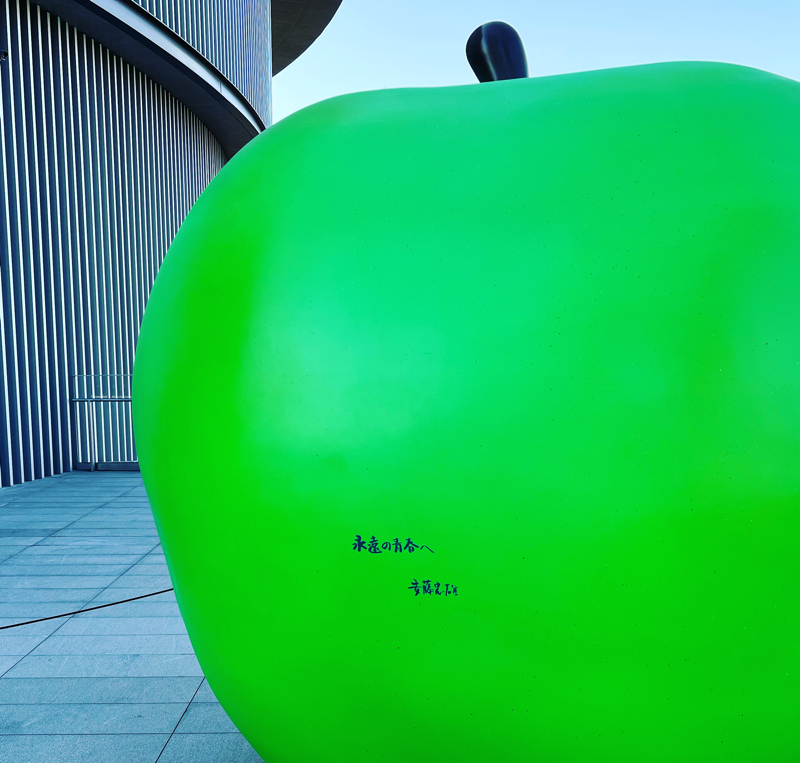

欢迎来到imdw.net
在互联网世界中，独立博客一直以其特有的魅力吸引着许多创作者。我从2003年开始就有了自己的独立博客，基于WordPress搭建。这并非出于任性或执拗，而是因为我深知互联网世界的原教旨——开放、互联、去中心化、知识共享、自由表达和创新——正是这个独立博客所体现的价值。
然而，随着时间的推移，WordPress的功能越来越多，性能也越来越差。我发现自己需要花费大量的时间精力去维护我的博客。此外，我的PC时代的原创主题直到现在都没有去做移动端适配，这对于只是需要写写字的我来说有点得不偿失。
因此，在2023年，我决定采用极简的网页风格继续我的独立博客。通过这种方式，我仍然可以拥有属于自己的角落，自由地表达自己的观点和想法。
简约的博客风格将使我更加专注于知识共享和创新。在这里，我可以发布自己的研究方向、心得体会以及生活点滴，与其他拥有相似兴趣和热情的人们共同探讨和进步。此外，借助这个平台，我还可以探索新颖的想法，探索前沿科技。
用极简风格的页面继续我的独立博客对我来说具有重要的意义。它让我得以紧密地与互联网世界的原教旨相连，让我在这个快速发展的时代中始终保持清晰的价值观和独立思考的能力。同时，我也希望我的博客能为他人提供启发和帮助，让互联网世界的原教旨在我们每个人的心中继续传承。
